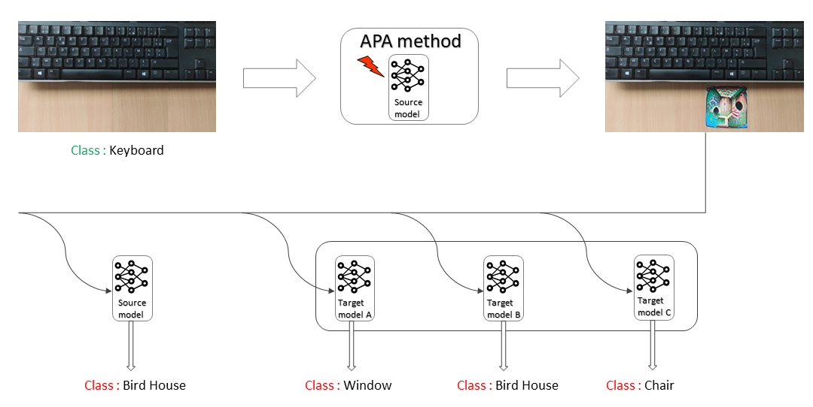
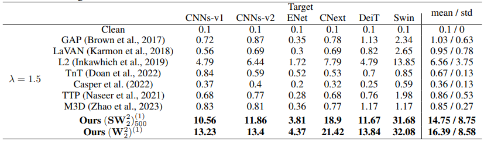

Optimal Transport Based Adversarial Patch Attacks
Authors:
- Mohammed Jawhar
- Aymane Rahmoune
Paper : Optimal Transport Based Adversarial Based Patch To Leverage Large Scale Attack Transferability
Table of contents :
- Introduction
- Understanding Adversarial Patch Attacks
- Transferability
- Optimal Transport
- Experiments
- Reproducibility
- Conclusion
Introduction
Imagine you’re showing a picture to a friend, asking them to guess who’s in it, then sticking a tiny, almost invisible sticker on that photo. For some reason, this sticker makes your friend completely unable to recognize who’s in the picture. This might sound like magic, but something similar can happen with Computer Vision models designed to capture an image content, either through a classification, a segmentation or even a generation task. These AI programs can be vulnerable to such tricks, that we call technically, Adversarial Patch Attacks.
As AI becomes increasingly integrated into various aspects of our lives, including critical applications like passport security systems, autonomous vehicles, traffic sign detection, and surgical assistance; the reliability, trustworthiness, and performance of these systems under all conditions became of prime importance. This has led to a growing interest in the area of Robust AI, which focuses on enhancing the safety and security of AI technologies by improving their resilience to adverse conditions and digital threats. Within this domain, the study of Attacks and Defense ways plays a pivotal role.
While these attacks might not seem like a big deal, nor dangerous in this context, the consequences can be severe in critical scenarios - take for example an autonomous vehicle failing to recognize a stop sign, hurting potentially a pedestrian. In this blog we will explore a new approach used for developping such adversarial patch attacks, based on Optimal Transport, as outlined in the paper Optimal Transport Based Adversarial Patch To Leverage Large Scale Attack Transferability. We will try to follow the same structure as in the paper to make the reading easier for you, but with much more simplicity.
Understanding Adversarial Attacks
First thing first, let us redefine some previously mentionned concepts, while making them into context.
As deep neural networks keep getting better, developers are working hard to make sure they are trustworthy and reliable. This means constantly testing them to see how well they can handle different challenges, quantifying their robustness, and developping some robustification methods. In the context of image classification for instance, one way to do this is by designing adversarial attacks, which consists of a perturbation or noise, sometimes invisible patterns added to the input images in order to confuse the model and make it misclassify them, causing a huge drop in the accuracy.
Adversarial Patch Attacks are a specific type that consists of altering only a small part(patch) of the input, either physically or digitally by inserting a crafted “sticker”. These attacks happen to be more threatful as they can be easily applied in real life, they do not require modification of the entire image, and they can fool multiple, vastly different models with the same crafted patch. This last property is called transferability and aims to test these engineered adversarial patches on various target models, beyond the original one used for learning, even if the two models(source and target) have been trained on different data or use different architectures, to evaluate the attack’s efficacy, and measure the models robustness.
Despite the fact that crafting adversarial patch attacks is mainly based around maximizing the classification error through a gradient ascent, we can differenciate between three distinct approaches:

-
Decision boundaries based : Which is the most applied approach in previous works and litterature. It focuses on pushing the image’s representation in the neural network’s decision space, across the decision boundary, making the network perceive it as belonging to a different, probability maximized class.
-
To simplify this approach, imagine a group of fans attempting to sneak into a VIP section at a concert by dressing in a fancy way, like known VIP guests(targeted class). The idea is to blend in so well that they are indistinguishable from actual VIPs to the security guards (the ML model). Despite the simplicity and goodness of this strategy, it has some drawbacks :
-
It is highly dependant on the model on which the attack is based, which makes it not really transferable: The success of this method hinges on the security’s lack of detail. If they are controlled by another security gard who is very familiar with the actual VIPs, the disguises will fail.
-
The patch may push the corrupted image representations into unknown regions of the representation space: In their attempt to mimic the VIPs, there’s a risk that their disguises might be so overdone that they don’t resemble any actual VIPs, pushing them to have a weird unique look. Hence, they end up in a no-man’s-land, not fitting in with either the regular attendees or the VIPs.
-
-
-
Feature point based : Instead of crossing a decision boundary, this strategy aims to modify the input so its representation in the feature space matches the one of a target point belonging to a different class. This is like fine-tuning the attack to match a specific “signature” that the model associates to a specific point.
-
Revisiting our concert analogy, consider the fans now opting to mimic a specific celebrity known to be attending the concert, assuming that matching this one high-profile individual’s appearance will guarantee them entry. Although it seems more precise and effective than the first approach, this strategy has a significan drawback :
- It depends heavily on the targeted point selection, this later may be not representative of all instances in the target class : For instance, if the celebrity is known for a distinctive but uncommon style or if it’s unusual for such celebrities to attend such events, their attempt to copy him might not match what the security team usually expects from VIP guests.
-
-
Distribution based : This new approach implemented in the paper we are analyzing , is based on Optimal Transport theory, and aims to alter the overall feature distribution ofa set of input images belonging to a specific class, to resemble another class’s distribution, reducing the gap between them in the feature space. It is more sophisticated than the previous ones as it exploits the fundamental way neural networks process and classify images based on learned distributions.
-
This time, the group studies a wide variety of guests behaviors and appearances to craft a new, ambiguous look that doesn’t specifically mimic any single guest type, nor disguise blindly in a “VIP” style, but instead blends into the overall crowd, avoiding easy detection.
- The main advantage of this approach is that it allows a better transferability between models, enhancing the performance in the blackbox configuration, as it is independant of the classifier’s decision boundary , and the choice of a specific target point. Furthermore it captures the useful characteristics (features) from an input in a more universal way.
-
Why do we need transferability ?
You surely noticed that we mentionned the transferability term many times in the last section, showing that is an essential property for designing such attacks, but why do we focus so much to make our patch transferable through many models? Well, it is like discovering a master key for many locks : It enables bad actors to compromise and confuse an AI system using a crafted patch they made without knowing anything about that system(architecture, training,…).

This ability to create a ‘one-size-fits-all’ adversarial patch allows to challenge many models, making it more difficult to develop defense mechanisms, and fostering the development of more robust AI systems. Unfortunately, this important property, which confronts the real-world variability of target systems, whose specific architectures or training details are often unknown, was not achieved strongly by previously developped Adversarial attacks; it was studied only by some specialized Adversarial Patch Attacks models(GAP, LaVan, PS-GAN) and gave very modest rsults, being evaluated on dated, non state of the art models Other models (TTP, M3D, Inkawhich et al.) conducted some experiments to measure the transferability of ivisible adversarial attacks and gave promizing results, but they didn’t focus i their work on patch attacks transferability.
Diving into Optimal Transport theory
The method introduced in this paper represents a remarkable success, as it bridges the gap between transferability studies of invisible adversarial examples and adversarial patch attacks, and provides a trade-off between an efficient non complex patch designing approach, and an exceptional transferability among many advanced state-of-the-art models. The key reason for this success lies in the inherent capabilities of optimal transport to measure the distance between two distributions. Particularly, the loss optimized in this method is relevant, as it can be used when the distributions do not overlap, and the theory behind it is intuitive. It is based mainly on the Wasserstain distance defined as :
$$W_{p}^p(\mu,\nu) = \inf_{\pi \in \Pi(\mu,\nu)} \int_{\mathbb{R}^d \times \mathbb{R}^d} ||x - y||^p d\pi(x, y)$$
or its more computationnaly efficient Sliced version, which compares the two distributions by computing the expected Wasserstein distance between their one-dimensional linear projections : $$SW_{p}^p(\mu,\nu) = \int_{S^{d-1}} W_{p}^p(\theta_{\#}^{*}\mu, \theta_{\#}^{*}\nu) d\sigma(\theta)$$
Where $\mu$ and $\nu$ are two propbability distributions on $\mathbb{R}^d$, $||.||$ the euclidean norm, $\pi$ is a transport plan between $\mu$ and $\nu$, and $ \theta_{\#}^{*} \mu $ and $ \theta_{\#}^{*} \nu $ the push-forward by $\theta^{*}(x)=<\theta, x>$ of $\mu$ and $\nu$ respectively.

This image is taken and adapted from the Sliced-Wasserstein distance for large-scale machine learning: theory, methodology and extensions paper.
To delve more into the mathematical details, let us explore how Optimal Transport, specifically the Wasserstein distance, is employed to craft effective adversarial examples: In the context of image classification, we consider the standard notation where a set of image-label pairs $(x_i, y_i)$ is drawn from a joint distribution of random variables $X$ and $Y$. The images $X$ are typically multi-dimensional arrays representing the height, width, and color channels of an image (e.g., a colored $256 \times 256$ pixel image would have $h = 256$, $w = 256$, and $c = 3$). Meanwhile, $Y$ is a set of discrete labels that classify these images (e.g., ‘cat’, ‘dog’, etc.). Within a given encoder-decoder neural network $F$, designed to predict these labels, the encoder function $f$ compresses the raw image data $X$ throughout each pooling layer into a feature space $S^{(l)}$, capturing essential patterns.

The Wasserstein distance $W_p$, calculated between the distributions of these feature spaces, reflects how much “effort” it would take to transform the distribution of features from one class into another. In the case of the proposed method, crafting the patch consits of minimizing the transformation cost (distance)of the features distribution from a corrupted “true” class into a “target” adversarial class across multiple layers. This can be formulated as follows:
$$\delta^* = \arg \min_{\delta} \mathbb{E}_X \left[ \sum_{l \in \mathcal{L}} OT(\mu_{X_{\delta}}^{(l)}, \nu_y^{(l)}) \right]$$
Where $OT$ is the optimal transport distance (Wasserstein or Sliced Wasserstein), $\mu_{X_{\delta}}^{(l)}$ is the feature distribution of images with the patch and $\nu_y^{(l)}$ is the target feature distribution for the incorrect class.
This can be further enhanced by adding a regularization term to ensure that the patches are effective under various conditions, and can be physically realisable. The problem becomes as follows :
$$\delta^* = \arg \min_{\delta} \mathbb{E}_{X, t\sim \tau, e\sim E} \left[ \sum_{l \in \mathcal{L}} OT(\mu_{A(\delta, X, e, t)}^{(l)}, \nu_y^{(l)}) + TV(\delta)\right]$$ where TV is the total variation loss discouraging high-frequency patterns.
Experiments
Experimental setup
To confirm the theoretical results and assumptions, several experiments were conducted under different conditions and settings. For the sake of simplicity, we will not delve into the exhaustive details of the experimental setup, procedures, and results. In summary:
-
The experiments aimed to evaluate the impact and transferability of the proposed adversarial patch - referred to as $(W_2^2)^{(1)} / (SW_2^2)_{500}^{(1)}$ - across a range of models.
-
$(W_2^2)^{(1)} / (SW_2^2)_{500}^{(1)}$ performance was benchmarked against other adversarial patch attack (APA) methods such as GAP, LaVAN, TNT, TTP, M3D, and others.
-
The source and target models chosen for this analysis were regrouped into six categories based on their architecture: CNNs-V1, CNNs-V2, ENet, CNext(ConvNext), DeiT, and Swin.
-
Tested patches were randomly placed to the side of images, in order to avoid occluding the object of interest and replicate more closely the real world conditions.
-
Targeted success rate (tSuc) metric was used for evaluating transferability. It consists of the percentage of instances where the network, when presented with an image containing the adversarial patch, incorrectly classifies the image as the attacker’s intended target class, out of the total number of attempts.
Results and Findings :
The experiments are structured into three main categories:
Digital experiments :
Simple configuration :
In this configuration, the patches efficacy was tested in a purely digital environment, using images from the ImageNet-1K dataset, which was used also for training. Patches were first designed to attack one of the source models, then tested on other target models to measure the attacking transferability. The table below summarizes for each APA method, the best transferring attack performance achieved :

As expected through the novelty of $(W_2^2)^{(1)} / (SW_2^2)_{500}^{(1)}$ approach, it shows the highest transferability capacity(mean, min and max) and outperforms all the other methods. Additionaly, we can make the following observations:
-
Networks trained with older training recipes (CNNs-v1) seem more vulnerable to attacks, unlike tansformers and models trained with new training recipes (scheduler, augmenting training data like RandAug and Mixup, …) which appear to be more robust.
-
For all APA methods, patches learned using Swin or CNext are more universal as they can transfer uniformly to multiple models.
-
In general, baseline methods tend to overfit and fail to generate patches that effectively transfer to complex architectures like CNext and Swin models, even if these patches are developed using the same category of models.
-
Methods based on feature space optimization, including L2 and the $(W_2^2)^{(1)} / (SW_2^2)_{500}^{(1)}$ approach, demonstrate improved transferability and are less likely to overfit.
Robustified configuration :
In the second configuration of the digital experiments, the same procedures were reapplied. However this time, the methods learn on Swin, and transfer to a robustified version, by Local Gradients Smoothing (LGS) - a defense mechanism smoothing salient regions in images before passing them to the network - , of the six model categories.
Similarly, $(W_2^2)^{(1)} / (SW_2^2)_{500}^{(1)}$ outperforms significantly all other methods as we can see in the following table :

Hybrid experiments:
In order to simulate real-world applications more closely, the hybrid experiments conducted within this section involved printing adversarial patches trained with Swin, placing them in physical environments, capturing the images, and then digitally analyzing the results, for simple, and robustified models.
The table below shows the criticality of the $(W_2^2)^{(1)} / (SW_2^2)_{500}^{(1)}$ giving very large tSuc in comparison with the other methods, for all settings:
Physical experiments:
In this last experiments category, we get closer to the real world situations, by recording a video of some ImageNet-1K objects (banana, cup , keyboard) while moving a designed patch in the set. This aims to quantify the severity of each attack, for realistic scenarios (as the example provided above about the autonomous vehicule not detecting the stop sign while driving due to an adversarial patch designed without knowing the AI system at all).
All APA methods failed to transfer properly on all architectures except for L2 with a modest tSuc(9.3%) and $(W_2^2)^{(1)} / (SW_2^2)_{500}^{(1)}$ that gave much better results (23.4% and 29.3%)
Reproducibility
In this section, we wanted to reproduce some of the experiments conducted in the paper to validate the results and the findings. However, by exploring the code provided with the paper, and analyzing the python files, we found that it is not well documented, and the structure is not very clear, which makes it difficult to understand and reproduce the complex experiments involving transferability evaluation. Furthermore, given that the paper is based on the ImageNet dataset, which is very large and requires a lot of computational resources, we were not able to run the experiments on our local machines, as we do not have access to a powerful GPU cluster. Consequently, we opted for the CIFAR-10 dataset, which is smaller and more manageable. Despite this adjustment, we still faced some issues Specifically, the model is built from scratch without an available pre-trained, and there are missing components, notably the function required to extract feature vectors from each layer of the target models. To address these challenges and make the reproduction process easier, we decided to develop the missing feature extraction function as an enhancement, and save the obtained results into files(in the same way it was done in the code), to be able to apply the optimal transport method and craft the adversarial patches later as perspectives
Here are the code that we developed :
import torch
import torchvision.models as models
import torchvision.transforms as transforms
from torch.utils.data import DataLoader
import torchvision.datasets as datasets
def get_loader(dataset: str, split: str, batch_size: int) -> torch.utils.data.DataLoader:
"""Return a DataLoader object for a given dataset and split."""
return torch.utils.data.DataLoader(get_dataset(dataset, split), batch_size=batch_size, shuffle=True)
def extract_features(data_loader, list_models):
"""
Extracts features from each layer of the pre-trained models provided in the list_models
by applying average pooling, and saves the extracted features into files.
"""
for model_name in list_models:
model = models.__dict__[model_name](pretrained=True)
model.eval()
for layer_name, layer in model.named_children():
if isinstance(layer, torch.nn.Sequential):
layer_features = []
for i, (input, target) in enumerate(data_loader):
with torch.no_grad():
output = layer(input)
output = torch.nn.functional.adaptive_avg_pool2d(output, (1, 1))
output = output.view(output.size(0), -1)
layer_features.append(output)
layer_features = torch.cat(layer_features)
torch.save(layer_features, f"./data/CIFAR/all_images_feature/{layer_name}/{model_name}.pt")
# Apply the function extract_features to some targeted models
list_models = ["resnet18", "vgg19", "convnext_tiny", "swin_t"]
data_loader = get_loader("CIFAR10", "train", batch_size=64)
extract_features(data_loader, list_models)
Conclusion
In conclusion, our exploration of the paper OPTIMAL TRANSPORT BASED ADVERSARIAL PATCH TO LEVERAGE LARGE SCALE ATTACK TRANSFERABILITY, revealed an innovative and promizing technique that uses Optimal Transport to make adversarial patches more effectively fool different models. This method, focusing on altering image feature distributions to match a target distribution from another class, has proven to be both theoretically sound and practically successful. It significantly outperforms current state of the art methods in creating patches that can be highly transferable between models and potentially very harmful, showing great promise for both advancements in the field and potential challenges in security applications.
References:
-
OPTIMAL TRANSPORT BASED ADVERSARIAL PATCH TO LEVERAGE LARGE SCALE ATTACK TRANSFERABILITY
-
Sliced-Wasserstein distance for large-scale machine learning : theory, methodology and extensions
-
Feature Space Perturbations Yield More Transferable Adversarial Examples